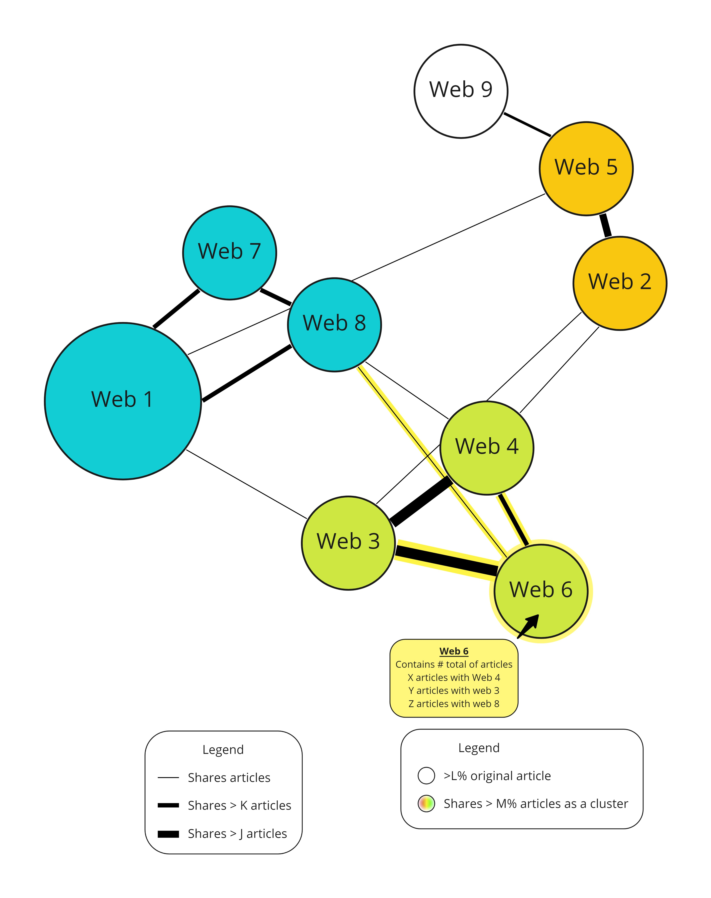

Tay Jing Zhi
Assignment 5
 Source: https://github.com/deepthiyathiender/Maps
Source: https://github.com/deepthiyathiender/Maps
Introduction
This diagram is created as an example by Github user deepthiyathiender, presummably, for the author to showcase a force-directed network graph. Nodes are visualized to 'pull' towards other randomly selected nodes.
Criticisms on data
-
N.A as too many information is generated randomly.
Criticisms on idiom
-
The criticisms below assume that the objective of the diagram is to eventually show how connected these popular websites are.
-
Text labelling:
Graph is entirely illegible. Text should minimally be plotted 'above' the circle patches and wrapped inside circle.
-
Visual weight with radius:
When discussing 'connectivity', visualizing absolute sizes gives a complimentary insight to a chart primarily about relativeness. Most appropriate to show with radius.
-
Visual weight of edges:
While the edges of a force-directed graph represent crucial links, it is not very visually informative to see all edges at once.
The author should consider applying a hierarchy to the visual weight with mouseover events.
Furhtermore, lineweight can be used ordinally to add another visually clear dimension of insights
-
Reduce dimensionality with clustering:
In my opinion, the final outcome of force-directed network graphs should include a clustering algorithm, with the objective to color websites linked to each other in similar tones. This may not be a practical idea as it is likely that most popular websites these days are linked to many other popular websites. Yet this makes identifying independent media websites ever more valuable.

Source: Author